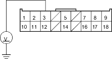
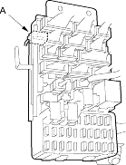
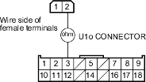
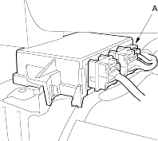

- Reconnect the battery negative cable.
- Connect a voltmeter between the No. 3 terminal (+) of U1o connector and body ground. Turn the ignition switch ON (II) and measure voltage. There should be battery voltage.
U1o CONNECTOR

Wire side of female terminals
Is there battery voltage?
YES - Go to step 29.
NO - Go to step 26.
- Turn the ignition switch OFF.
- Disconnect the F1o connector (A) from the under-dash fuse/relay box.

- Check resistance between the No. 3 terminal of the U1o connector and the No. 2 terminal of the F1o connector. There should be 0 - 1.0 ohm.
F1o CONNECTOR

Wire side of female terminals
Is the resistance as specified?
YES - Open in the under-dash fuse/relay box or poor contact at the F1o connector; check the connection. If the connection is OK, replace the under-dash fuse/relay box. 
NO - Open in dashboard wire harness B; replace the dashboard wire harness B.
- Turn the ignition switch OFF.
- Disconnect the U3o connector (A) from the SRS unit.
